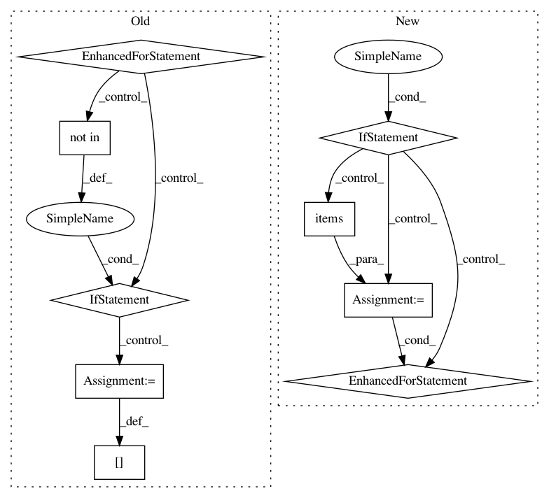

a473c777983b7f2e123f996c9b15607cb1979701,onmt/ModelConstructor.py,,load_test_model,#Any#Any#,117
Before Change
checkpoint["vocab"], data_type=opt.data_type)
model_opt = checkpoint["opt"]
for arg in dummy_opt:
if arg not in model_opt:
model_opt.__dict__[arg] = dummy_opt[arg]
model = make_base_model(model_opt, fields,
use_gpu(opt), checkpoint)
model.eval()
model.generator.eval()
After Change
model_opt = checkpoint["opt"]
for arg in dummy_opt:
if arg not in model_opt:
model_opt.__dict__[arg] = dummy_opt[arg]
model = make_base_model(model_opt, fields,
use_gpu(opt), checkpoint)
model.eval()
model.generator.eval()
return fields, model, model_opt
def make_base_model(model_opt, fields, gpu, checkpoint=None):
Args:
model_opt: the option loaded from checkpoint.
fields: `Field` objects for the model.
gpu(bool): whether to use gpu.
checkpoint: the model gnerated by train phase, or a resumed snapshot
model from a stopped training.
In pattern: SUPERPATTERN
Frequency: 3
Non-data size: 9
Instances
Project Name: OpenNMT/OpenNMT-py
Commit Name: a473c777983b7f2e123f996c9b15607cb1979701
Time: 2018-05-11
Author: stig-arne.gronroos@aalto.fi
File Name: onmt/ModelConstructor.py
Class Name:
Method Name: load_test_model
Project Name: dpressel/mead-baseline
Commit Name: 4edc5dd05bb737dcba543b12c8943ffbae6c9c92
Time: 2018-09-26
Author: blester125@users.noreply.github.com
File Name: python/mead/tasks.py
Class Name: Task
Method Name: _configure_reporting
Project Name: pantsbuild/pants
Commit Name: 595799cb641c6514eccd4b6908cfaf4426c5a389
Time: 2015-10-23
Author: john.sirois@gmail.com
File Name: src/python/pants/engine/exp/configuration.py
Class Name: Configuration
Method Name: create